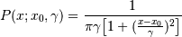
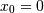
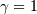

numpy.random.standard_cauchy¶
- numpy.random.standard_cauchy(size=None)¶
Standard Cauchy distribution with mode = 0.
Also known as the Lorentz distribution.
Parameters : size : int or tuple of ints
Shape of the output.
Returns : samples : ndarray or scalar
The drawn samples.
Notes
The probability density function for the full Cauchy distribution is

and the Standard Cauchy distribution just sets  and 
The Cauchy distribution arises in the solution to the driven harmonic oscillator problem, and also describes spectral line broadening. It also describes the distribution of values at which a line tilted at a random angle will cut the x axis.
When studying hypothesis tests that assume normality, seeing how the tests perform on data from a Cauchy distribution is a good indicator of their sensitivity to a heavy-tailed distribution, since the Cauchy looks very much like a Gaussian distribution, but with heavier tails.
References
[R227] NIST/SEMATECH e-Handbook of Statistical Methods, “Cauchy Distribution”, http://www.itl.nist.gov/div898/handbook/eda/section3/eda3663.htm [R228] Weisstein, Eric W. “Cauchy Distribution.” From MathWorld–A Wolfram Web Resource. http://mathworld.wolfram.com/CauchyDistribution.html [R229] Wikipedia, “Cauchy distribution” http://en.wikipedia.org/wiki/Cauchy_distribution Examples
Draw samples and plot the distribution:
>>> s = np.random.standard_cauchy(1000000) >>> s = s[(s>-25) & (s<25)] # truncate distribution so it plots well >>> plt.hist(s, bins=100) >>> plt.show()